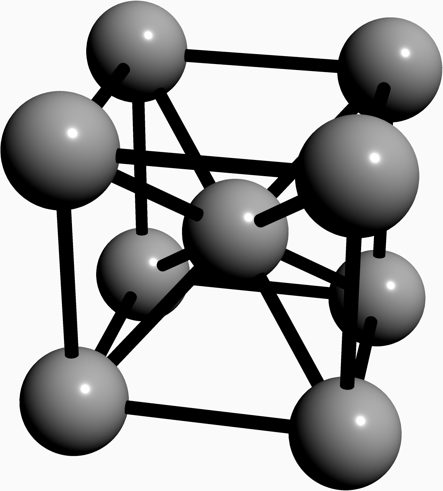

Code for Drive Systems Magnetic Circuits and Materials
Table of Contents
These are the code snippets used in Magnetic Circuits and Materials
part of Drive Systems.
Introduction
The following code uses the standard matplotlib along with the custom ChalcedonPy which is detailed in its source code here.
The code is used primarily in the following code as a means to save figures for use in slides.
import matplotlib.pyplot as plt import ChalcedonPy as cp # Initialise ChalcedonPy cp.init(save_path="Magnetic-Circuits-and-Materials", display_mode="web")
Hysteresis Model
In electromagnetism and materials science, the Jiles–Atherton model of magnetic hysteresis was introduced in 1984 by David Jiles and D. L. Atherton. This is one of the most popular models of magnetic hysteresis. Its main advantage is the fact that this model enables connection with physical parameters of the magnetic material.
import numpy as np from scipy.constants import mu_0 a = 470 # A/m alpha = 9.38e-4 c = 0.0889 k = 483 # A/m Ms = 1.48e6 # A/m H = [0] delta = [0] Man = [0] dMirrdH = [0] Mirr = [0] M = [0] DeltaH = 20 Nfirst = 125 Ndown = 250 Nup = 250 for i in range(Nfirst): H.append(H[i] + DeltaH) for i in range(Ndown): H.append(H[-1] - DeltaH) for i in range(Nup): H.append(H[-1] + DeltaH) delta = [0] for i in range(len(H) - 1): if H[i + 1] > H[i]: delta.append(1) else: delta.append(-1) def L(x): return (np.cosh(x) / np.sinh(x)) - (1 / x) for i in range(Nfirst + Ndown + Nup): Man.append(Ms * (1 / np.tanh((H[i + 1] + alpha * M[i]) / a) - a / (H[i + 1] + alpha * M[i]))) dMirrdH.append((Man[i+1] - M[i]) / (k * delta[i+1] - alpha * (Man[i + 1] - M[i]))) Mirr.append(Mirr[i] + dMirrdH[i + 1] * (H[i+1] - H[i])) M.append(c * Man[i + 1] + (1 - c) * Mirr[i + 1]) # Plot the figure fig = plt.figure() ax = fig.add_subplot(1, 1, 1) # Move left y-axis and bottom x-axis to centre, passing through (0,0) ax.spines['left'].set_position('center') ax.spines['bottom'].set_position('center') plt.plot(H, M) cp.store_fig("hysteresis-curve", close=True)
Atomic Structure of Electric Grain Steel
Electrical steel is speciality steel used in the cores of electromagnetic devices such as motors, generators, and transformers because it reduces power loss.
It is an iron alloy with silicon as the main additive element (instead of carbon). The exact formulation is tailored to produce specific magnetic properties:
- small hysteresis area resulting in low power loss per cycle,
- low core loss,
- and high permeability.
Below is the code for drawing the atomic structure of the electric grain steel.
settings.render = 4; settings.outformat = "png"; import three; currentprojection=perspective(200,-950,500); pen Slide = RGB(250, 250, 250); //pen Slide = RGB(54, 58, 79); currentlight.background = Slide; surface carbon=scale3(40)*unitsphere; // 70 pm surface hydrogen=scale3(50)*unitsphere; // 25 pm real alpha=90; real CCbond=100; // 156 pm real CHbond=150; // 110 pm triple c1=(0,0,0); triple c2=(200,0,0); triple c3=(200,200,0); triple c4=(0,200,0); triple c5=(0,0,200); triple c6=(200,0,200); triple c7=(200,200,200); triple c8=(0,200,200); triple c9=(100,100,100); pen Black=gray(0.7); draw(shift(c1)*carbon,Black); draw(shift(c2)*carbon,Black); draw(shift(c3)*carbon,Black); draw(shift(c4)*carbon,Black); draw(shift(c5)*carbon,Black); draw(shift(c6)*carbon,Black); draw(shift(c7)*carbon,Black); draw(shift(c8)*carbon,Black); draw(shift(c9)*carbon,Black); pen thick=linewidth(10); draw(c1--c2--c3--c4--cycle,thick); draw(c5--c6--c7--c8--cycle,thick); draw(c1--c5, thick); draw(c2--c6, thick); draw(c3--c7, thick); draw(c4--c8, thick); draw(c1--c9, thick); draw(c2--c9, thick); draw(c3--c9, thick); draw(c4--c9, thick); draw(c5--c9, thick); draw(c6--c9, thick); draw(c7--c9, thick); draw(c8--c9, thick);

settings.render = 2; //settings.outformat = "png"; import tube; import graph3; size(10cm,0); currentprojection=orthographic(2,4,2,zoom=1,center=true); pen Slide = RGB(250, 250, 250); currentlight.background = Slide; real x(real t) {return .03*t;} real y(real t) {return .5cos(t);} real z(real t) {return .5sin(t);} real tmin=0,tmax=40pi; triple A=(x(tmin)-.5,y(tmin),z(tmin)); triple B=(x(tmax)+.5,y(tmax),z(tmax)); path3 p=A--graph(x,y,z,0,36pi,operator ..)--B; path section=scale(.05)*unitcircle; // Define a pen wich depends of a real t. t represent the "reltime" of the path3 p. pen pen(real t){return brown+gray;} // Here the section has colored segments (by default) depending to reltime. draw(tube(p,coloredpath(section,pen)));
import pandas as pd import numpy as np import matplotlib.pyplot as plt from scipy.optimize import curve_fit df = pd.read_csv('/Users/danielmcguiness/Downloads/plot-data(1).csv') H=df["x"].to_numpy() B=df["y"].to_numpy() def sigmoid(x, L ,x0, k, b): y = L / (1 + np.exp(-k*(x-x0))) + b return (y) p0 = [max(B), np.median(H),1,min(B)] # this is an mandatory initial guess popt, pcov = curve_fit(sigmoid, H, B,p0, method='dogbox') # set the title plt.plot(H,B) plt.plot(H,pcov, pcov, '-', label='s=0') plt.show() # show the plot cp.store_fig("m-5-steel-magnetisation", close=True)
Magnetic Field Lines
Magnetic Field lines ( ) are the ways in which
we describe the materials magnetic usability. The following
code snippet and its output showcases the effect of having
a material with high permeability compared to
a magnetically inert material like air.
) are the ways in which
we describe the materials magnetic usability. The following
code snippet and its output showcases the effect of having
a material with high permeability compared to
a magnetically inert material like air.
# imports import numpy as np import matplotlib.pyplot as plt import magpylib as magpy # create figure fig = plt.figure(figsize=(8,8)) ax1 = fig.add_subplot(111) # this is a 2D-plotting-axis # create magnets s1 = magpy.source.magnet.Box(mag=[0,0,600],dim=[3,3,3],pos=[-4,0,3]) s2 = magpy.source.magnet.Cylinder(mag=[0,0,500], dim=[3,5]) # manipulate magnets s1.rotate(45,[0,1,0],anchor=[0,0,0]) s2.move([5,0,-4]) # create collection c = magpy.Collection(s1,s2) # display system geometry on ax1 #magpy.displaySystem(c,subplotAx=ax1,suppress=True) # calculate B-field on a grid xs = np.linspace(-10,10,29) zs = np.linspace(-10,10,29) Bs = np.array([[c.getB([x,0,z]) for x in xs] for z in zs]) # display field in xz-plane using matplotlib X,Z = np.meshgrid(xs,zs) U,V = Bs[:,:,0], Bs[:,:,2] ax1.streamplot(X, Z, U, V, color=np.log(U**2+V**2),density=2) cp.store_fig("magnetic-field-lines", close=True)l